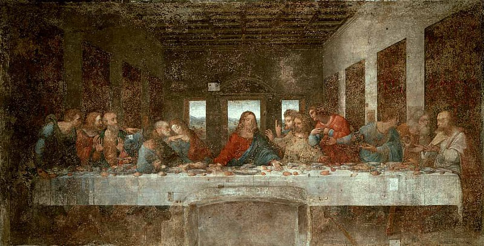

Рожь - Иван Шишкин
Описание картины "Рожь - Иван Шишкин":
Картина была написана художником в 1878 году. Ивана Ивановича Шишкина мы знаем, как одного из лучших пейзажистов русской природы. На одном из эскизов своей работы художник сделал карандашом краткую надпись, которая раскрывает тему его картины: «Раздолье, простор, угодье, рожь. Божья благодать, русское богатство». Невозможно описать картину «Рожь» более точно, чем это сделал сам автор. На картине изображено поле созревающей ржи: тяжелые желтые колосья уже налились зерном и клонятся к земле, величественные сосны замерли посреди поля в полуденной дреме, пустынная дорога, знойное лето, когда незаметно даже движение воздуха. Покой и умиротворение. Ничто не нарушает гармонию пейзажа. На картине воссоздано широкое пространство поля, а сосны на среднем плане создают некую границу и будто охраняют золотое безмолвие. Все внимание приковывает открывшийся вид. Шишкинскую Рожь можно сравнить с поэмой. Его рожь - это символ жизни, главная энергия существования. Дорога - как один из символов национальной жизни, ее часто изображали многие русские художники. Но самое главное, что есть в этом золотистом пейзаже – огромная любовь художника к природе, к русской природе. Однако, картина «Рожь» отличается от других Шишкинских работ спокойствием, особым душевным равновесием. Практически все свои картины Иван Иванович пишет с натуры. И эту тему, как и для многих других своих картин, Шишкин нашел на родине, когда предпринял поездку в Елабугу со своей дочерью в 1877 году. Возможно, поэтому, его полотна столь образны и вызывают волну ассоциаций и живое представление зрителя, себя – там, на поле. Величественные и могучие сосны очень любимы Шишкиным - он пишет их в других картинах - «Утро в сосновом бору», «Сосновый лес», «Сосновый бор».
Больше информации о картине...